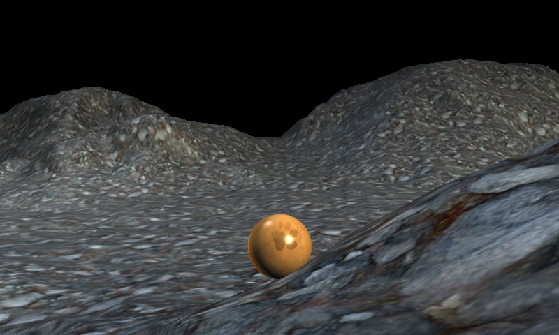

Heightmap Collision
Ported from Microsoft's XNA 4.0 Heightmap Collision Sample.
Source for this sample on GitHub ↗

Play ▸Opens in a new tab.
About this sample
Roll a sphere over a rocky terrain generated from a heightmap. The sphere follows the terrain's height, while a chase camera turns with it and stays above the ground.
Controls
| Action | Keyboard |
|---|---|
| Roll forward or backward | W / S or Up / Down |
| Turn left or right | A / D or Left / Right |
| Exit | Escape |